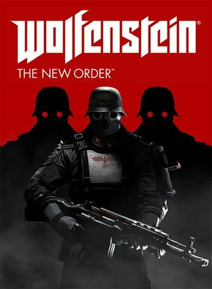
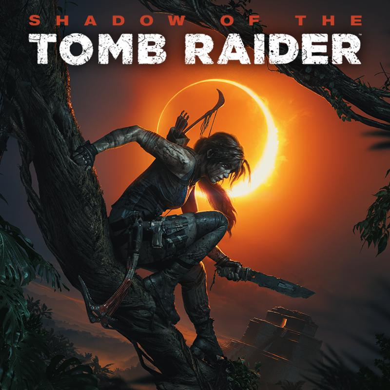
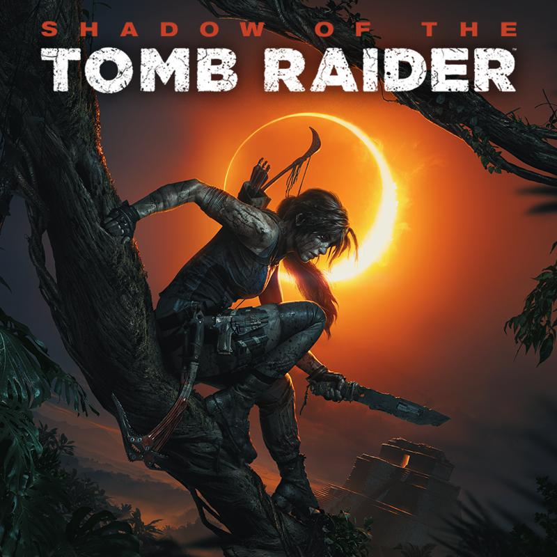

Üdvözlő
Üdvözlünk minden kedves idelátogatót az oldalunkon! Ezen az oldalon megosztunk veletek egy pár, általunk nagyon
kedvelt és imádott videojátékokról infótkat és azt is, miért is szeretjük őket igazán.
Számunkra a videojátékozás egy fontos szabadidős tevékenység, mert ez az egyik legjobb médium arra, hogy
történeteket meséljen, világokat építsen és embereket kössön össze.
A következő négy oldalon kiválasztottunk 2-2 játékot amikről olvashattok és nagyon örülnénk, ha ti is kipróbálnátok őket, ha kedvet adtunk nektek a felfedezésükre. Az egyes játékokról szóló oldalakat a képekre kattintva érhetitek el.
Ha esetleg már játszottatok a játékok valamelyikével vagy azután próbáltátok ki, miután kedvet adtunk nektek, akkor lehetőségetek van a lap alján lévő űrlapon keresztül leírni mi a véleményetek az adott játékról. Meglátásaitokat kíváncsian várjuk! :)
The games
 
